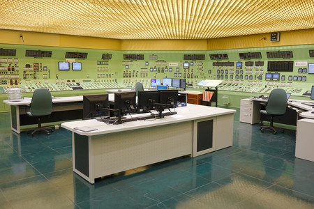

¿Cual es tu desición?

1-Activar desde la sala de control principal: La sala de control principal tiene acceso directo al sistema de emergencia.
2-Activar desde la sala de servidores: La sala de servidores también tiene un panel de emergencia que podría funcionar.